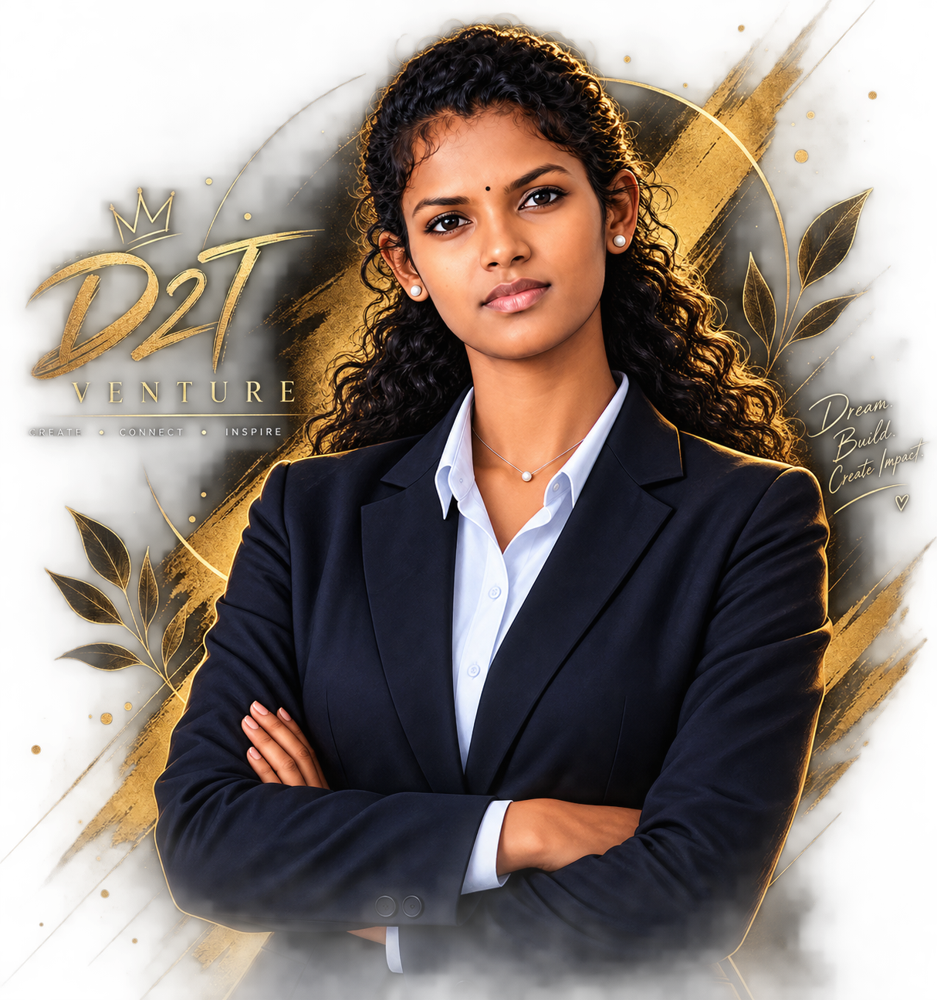

Hello, I'm Rajeshwari
Founder of D2T Venture
Welcome to D2T Venture — a space where creativity, technology, purpose and positive impact come together.
I believe that technology is not only about building applications or solving technical problems. It is also about creating meaningful experiences, helping people and turning ideas into something valuable.
D2T Venture is my way of bringing different passions together under one platform — technology, creativity, motivation, healthcare awareness and social impact.
My Journey
Learning, creating and growing one step at a time.
Technology & Learning
My journey in Information Technology introduced me to programming, web development, data analytics, artificial intelligence and many other areas of technology.
Building Ideas
Through projects and practical experiences, I learned how ideas can be transformed into real solutions using technology and creativity.
D2T Venture
D2T Venture was created as a platform to bring my different interests together and create something meaningful for people.
My Skills
Things I enjoy learning and working with.
Web Development
HTML · CSS
Programming
Python
Data Analytics
Excel · Power BI · SQL
Database
PostgreSQL
Featured Projects
Some of the work that represents my learning.
Smart Landslide Detection
An IoT and deep learning based landslide detection and early warning system designed to monitor environmental conditions and identify potential landslide risks.
Spreading Smiles
A social initiative focused on spreading positivity, kindness and meaningful support through simple actions and community involvement.
D2T Venture
A multi-purpose platform combining technology, creativity, motivation, healthcare awareness and social impact.
Creating. Connecting. Inspiring.
D2T Venture is just the beginning. My goal is to continue learning, build meaningful projects and create something that can make a positive difference.